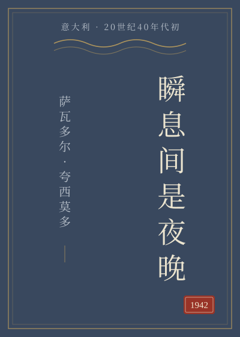
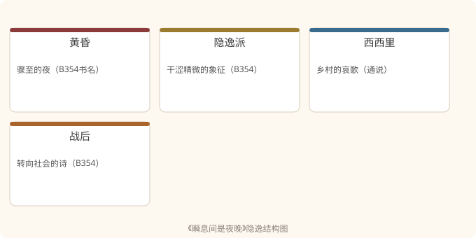

瞬息间是夜晚
一、基本信息
| 作者 | 萨瓦多尔·夸西莫多 |
|---|---|
| 成书/出版 | 1942年（Britannica B354：Ed è subito sera (1942; And Suddenly Its Evening)——隐逸期收束） Salvatore Quasimodo — Encyclopaedia Britannica（百科全书） |
| 国别/地区 | 意大利 |
| 时代 | 现当代 · 20世纪40年代初 |
| 体裁 | 诗集 |
| 语言 | 意大利语 |

《瞬息间是夜晚》隐逸结构图（主题·结构图）
二、创作背景
Britannica（B354）：Ed è subito sera——隐逸期终于 Poesie (1938) 与本集（1942）。
Britannica（B354）：夸西莫多师从翁加雷蒂与蒙塔莱起步；'gradually became a leader of the Hermetic poets'；1930年代'the dry, sophisticated style and abstruse symbolism of Hermeticism'。
Britannica（B354）：战后转向——Giorno dopo giorno (1947)——'Many of his poems recalled the injustices of the fascist regime, the horrors of the war, and Italian guilt.'
三、内容脉络
西西里乡村的哀歌：'每个人孤独地站在世界的心上'（名句通说待核——B354未载原文）。
干涩精微的隐逸语体（B354：dry, sophisticated style and abstruse symbolism）。
四、主要人物表
| 人物 | 身份 | 说明 |
|---|---|---|
| 抒情'我' | 隐逸诗人 | （B354 语系） |
五、主题与艺术特点
- 隐逸派的晦涩象征（B354）。
- 西西里与流亡的心象（通说待核）。
- 战前的静默与战后的爆发（B354：转向语境）。
六、影响与评论
- Britannica：1959年诺贝尔文学奖（B354）。
Salvatore Quasimodo — Encyclopaedia Britannica（百科全书） - Britannica：'Originally a leader of the Hermetic poets...'（B354）。
Salvatore Quasimodo — Encyclopaedia Britannica（百科全书）
七、阅读建议
难点
- 隐逸派的省略与浓缩。
- 西西里方言地名（通说待核）。
- 《瞬息间是夜晚》中译本（人民文学/译林等——通说待核）。
- 意大利文原版。
夸西莫多首选；后接《日复一日》(1947)。
八、待核实
- 通行译名（《瞬息间是夜晚》/《而倏然已是黄昏》）待核。
- 名句原文核对（B354未载）。
- 1942年出版（Mondadori说）待核。
本页主要来源
萨瓦多尔·夸西莫多的其他收录作品：瞬息间是夜晚